TAMIYA 1/24 Porsche Carrera GT Full-View
yahoo等で、「タミヤポルシェカレラＧＴフルビュー画像」で検索しますと、タミヤ社作成のクレイモデルを観ることができます。
当方も別のフルビューモデルを作製した事がありますが、説明書通りにシャシー部分を黒系統で塗装すると、透明ボディをかぶせても、けっこう中身が確認しずらい。
よって、今回は思い切ってシャシー部分を白、グレー系統で塗装し、中身の確認がしやすいか等を確認しながら作業を行います。
シャシー と モノコック －１

シャシーの内側（写真で見えている部分）、モノコックを全体的に白で塗装しています。
シャシー と モノコック －２

車内床周り、タイヤハウス裏はダークグレーで塗装。尚、後輪のタイヤハウスは、タイヤが上から確認できるように切断しています。
シャシー と モノコック －３
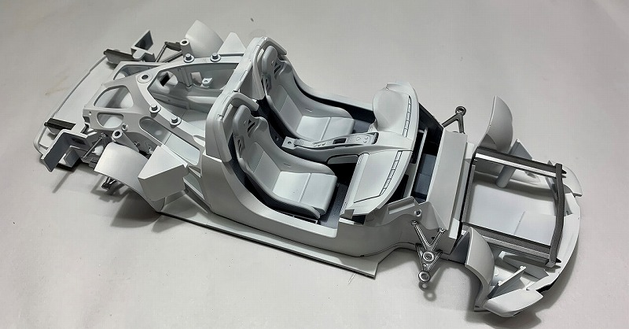この時点で、室内を実際の車のように、赤系統で塗装するか悩みましたが、白・グレーなど無彩色の単式相の明暗で作製する事としました。
シャシー と モノコック －４

エンジン、サスを取り付ける前の状態で、記念の一枚。尚、エンジン周り、サスペンションは説明書通りの色で塗装しました。
フルビューボディを組み込んで確認 －１

ホイールを漂白したら、透明パーツであったのはうれしい誤算。サスペンションの赤色が効果的と思うが、どうでしょうか？
フルビューボディを組み込んで確認 －２

フルビューとは云え、やっぱり白いほうが内部は確認し易いですね＾＾；。ホイール周りもよく見えて、この状態で飾ってもＯＫかな？。タイヤはめると見えなくなるし・・。
フルビューボディを組み込んで確認 －３

なかなかいいんじゃないでしょうか・・。
フルビューボディを組み込んで確認 －４

フロントのトランク部分がスカスカですね！。どうしようかな・・色付けようかな・・。
パーティングラインも購入時のまま残ってます。ボディを無塗装で完了とするなら、パーティングラインがあってもいいんですが、塗装部分にそれがあると格好悪いですね・・。
フルビューボディを組み込んで確認 －５

フロントガラス周りは、塗装した方が、立体感がでるような気がします・・。
フルビューボディを組み込んで確認 －６
ボディのどこを塗りましょうかねえ・・。悩みます。
フルビューボディを組み込んで確認 －７
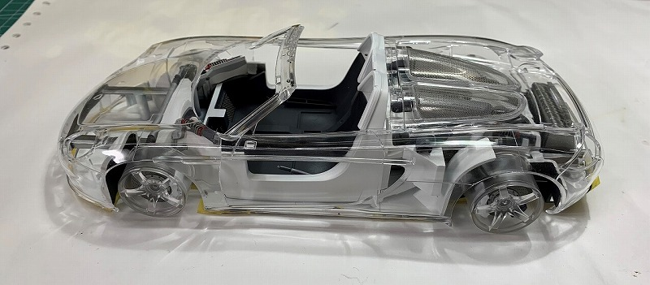これからコクピット周りを組み込んでいきましょう。シートはライトグレーで塗装します。
コクピット周りを追加して確認 －１
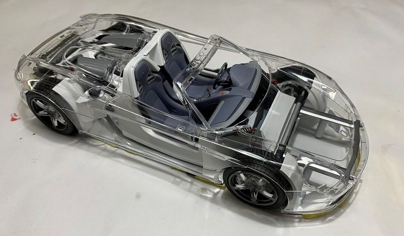コクピット周り と タイヤを組み込みました（前方から）。シートが思いの他明るい。周りの色と調和していますかね・・。赤に変更するか・・もう無理ですね。メータ周りは接着したし・・。
コクピット周りを追加して確認 －２

コクピット周り と タイヤを組み込みました（後方から）。
コクピット周りを追加して確認 －３
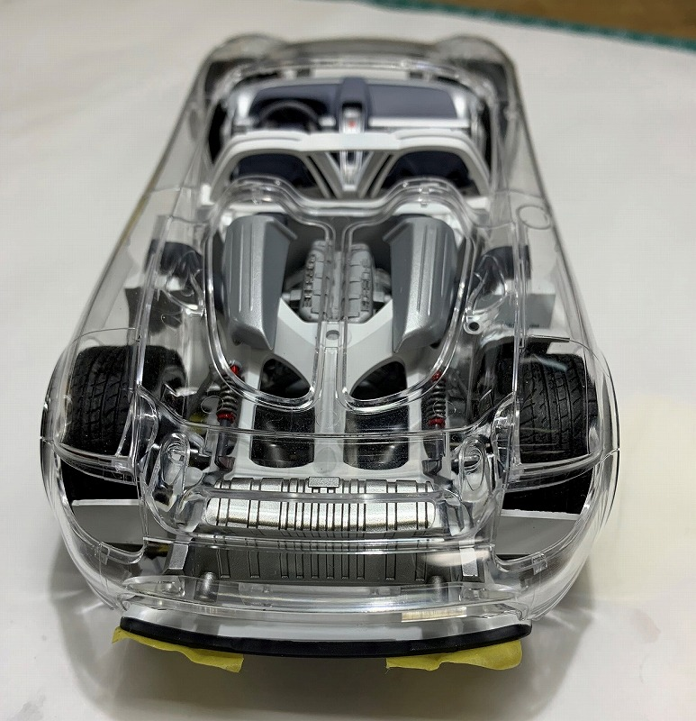コクピット周り と タイヤを組み込みました（真後から）。
コクピット周りを追加して確認 －４
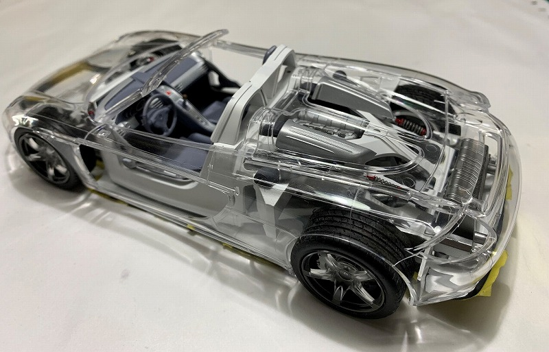コクピット周り と タイヤを組み込みました（後方から）。
コクピット周りを追加して確認 －５
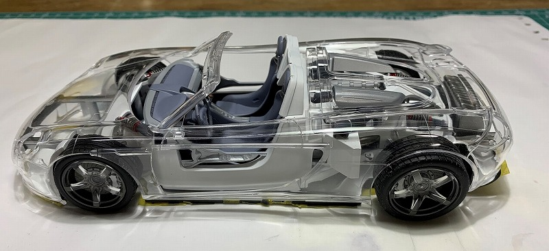コクピット周り と タイヤを組み込みました（横から）。
コクピット周りを追加して確認 －６
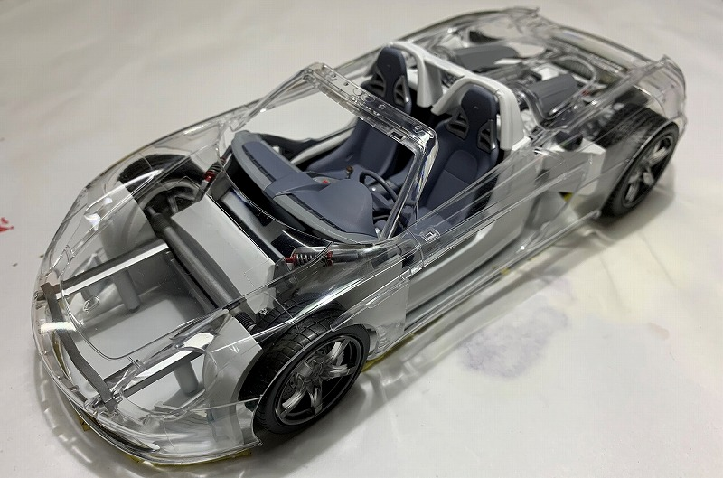コクピット周り と タイヤを組み込みました（前方から）。ボディのどこを塗装するか決定しました。
これから塗装です。もうここには戻れない・・。
ボディを塗装して確認 －１
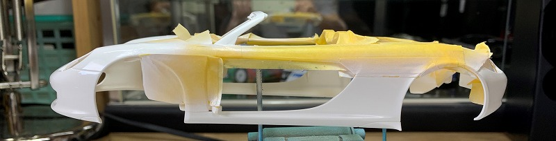マスキングテープで加工。前回９１１ＧＴ１で失敗した白色が薄くならないように気を付けます。
まず、クレオス「ベースホワイト1000」で隠蔽した後、「TAMIYA TS-7 レーシングホワイト」を塗装しています。
その後、「アサヒペン 自動車 塗料 クリア」を希釈して塗装します。
ボディを塗装して確認 －２
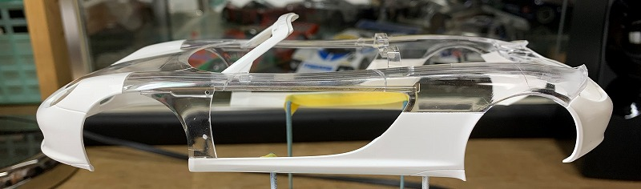塗装して約１０日間乾燥。その後「フィニッシングペーパー１５００番、２０００番」で水研ぎ、その後「バフレックス２０００番、３０００番」で水研ぎ。
その後、「タミヤコンパウンド 赤 青 白」の順で鏡面を作成し、最後に「セラミックコンパウンド」で仕上げます。
その後、塗装面を傷つけないように、丁寧にマスキングテープを剝がします。
マスキングテープでできた断面の荒い部分は、再度上記を行います。この時、１ｍｍの研ぎ幅（塗装面０．５ｍｍ＋透明面０．５ｍｍくらい）をマスキングテープで作製して補正を行うといいと思います。
塗装ボディを組み合わせて確認 －１
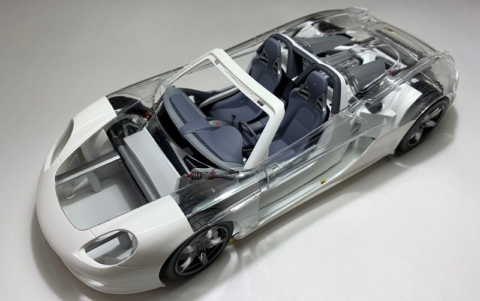前の部分を結構な量を塗装したのは、ヘッドライト周りの接着部分を隠蔽したかったのが一番の理由です。
塗装ボディを組み合わせて確認 －２
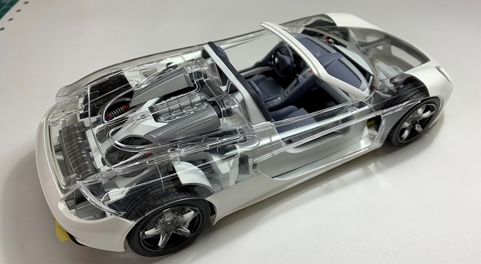前の方に反し、後方は透明部分が多いですが、後工程で白いパーツを取り付ける箇所があるのでなんとかなるかな・・。
塗装ボディを組み合わせて確認 －３
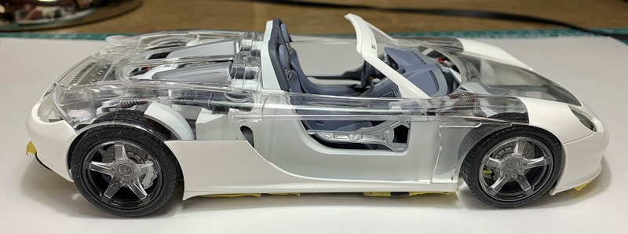横からみた感じはいいと思いますが・・。
塗装ボディを組み合わせて確認 －４
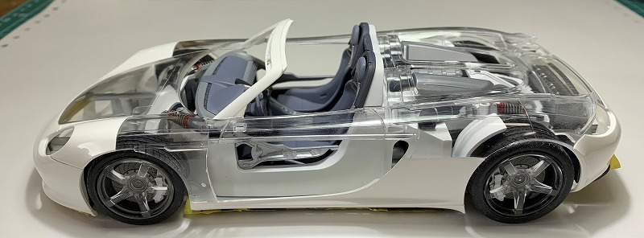とりあえず、反対の横から。
塗装ボディを組み合わせて確認 －５
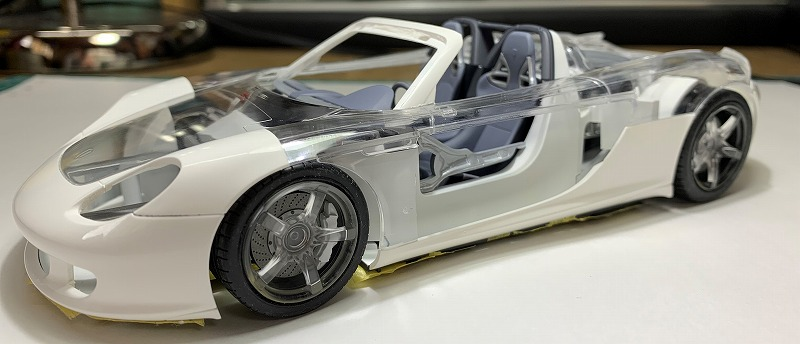完成後、棚に飾る角度はこんな感じかな。
塗装ボディを組み合わせて確認 －６
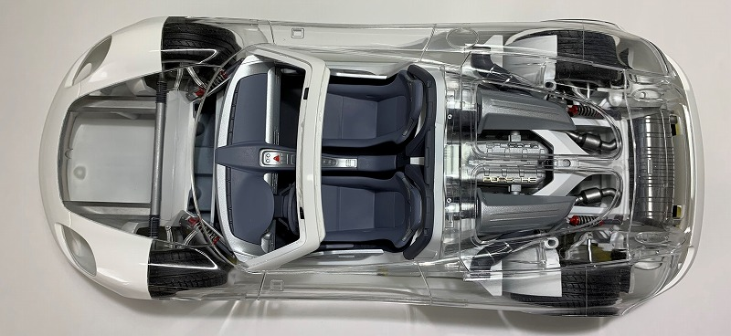真上から。エンジンルームの明暗もはっきりわかります。
説明書通りだと、黒系が多いので透明部品越しに見た場合、明暗がボケてしまうんですよね。
塗装ボディを組み合わせて確認 －7
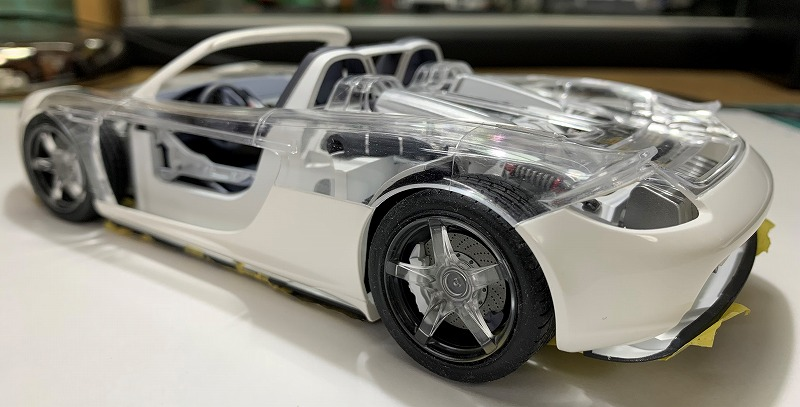後は、ヘッドライト、テールランプ、フロントガラス関連ですね。
細かいパーツですし、完成後にも見える所なので気を引き締めて作業していきましょう。
ここから先の接着剤は、「GSIクレオス 美透明接着剤」を使用していきます（流し込みタイプは絶対に使わない事。予期せぬ場所に入ります）。
そして、こまめに手を洗う事が、きれいなボディを作成するコツです。